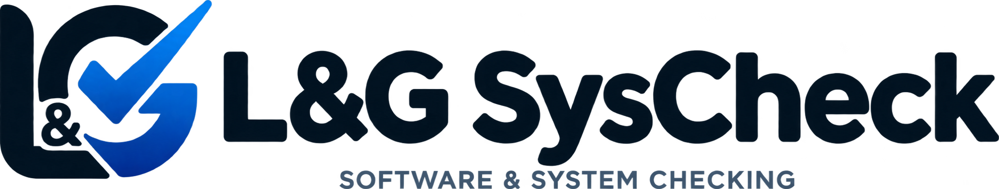
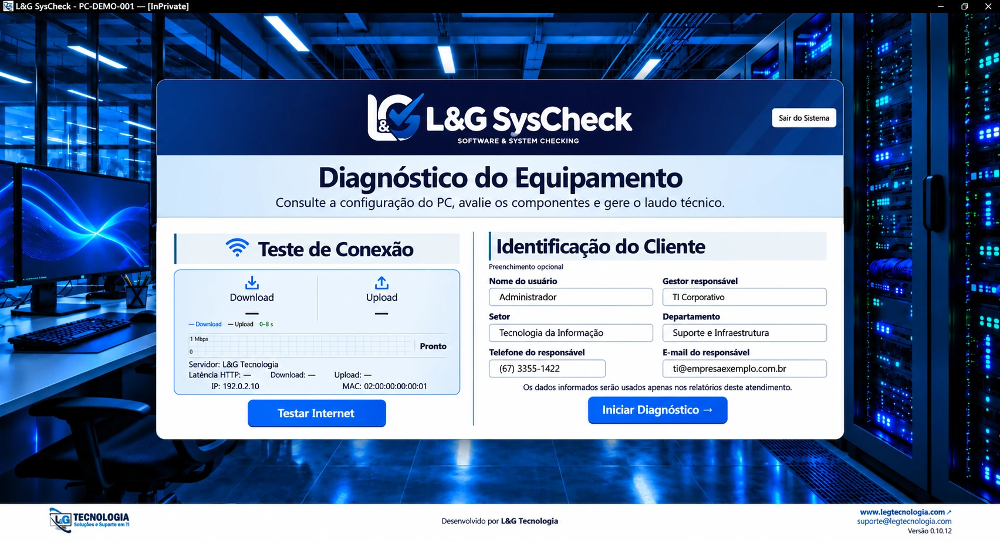
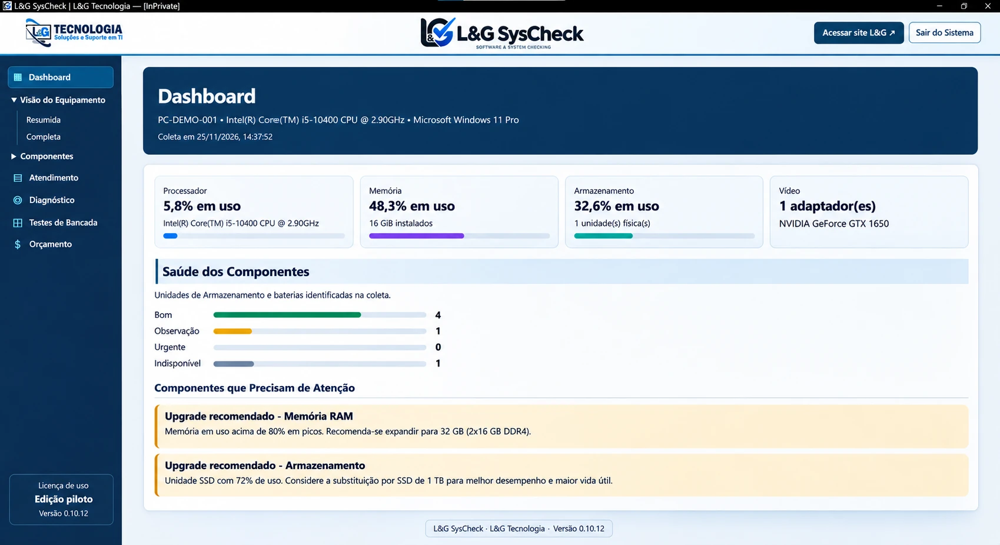
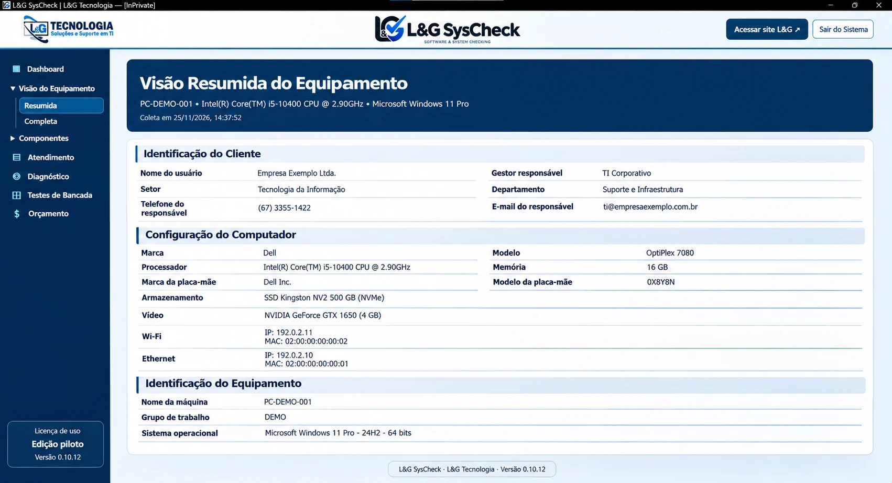
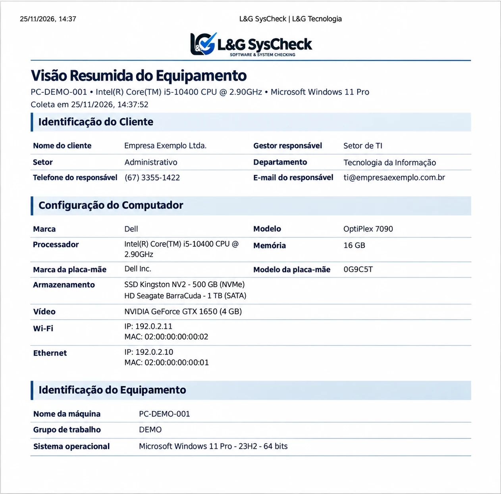

Diagnóstico inteligente para seu computador.
Conheça seu hardware, execute testes e gere relatórios técnicos com praticidade.
Diagnóstico técnico de forma simples e prática.
O L&G SysCheck permite consultar as principais características do computador, acompanhar informações de desempenho e identificar dados importantes para avaliação técnica do equipamento.
Desenvolvido para profissionais de TI e usuários que desejam conhecer melhor a configuração de seus computadores.
L&G SysCheck
Ferramenta portátil para Windows
Conheça o L&G SysCheck por dentro.
Explore as principais telas da ferramenta, desde a identificação do equipamento até a geração de relatórios técnicos.


Tela Inicial
Teste de conexão e identificação do cliente.


Dashboard
Desempenho e saúde dos componentes.


Visão Resumida
Configurações e identificação do equipamento.


Relatório Técnico
Exemplo de relatório gerado pelo sistema.
Imagens demonstrativas com dados fictícios. A interface pode apresentar diferenças entre versões.
Baixe a versão piloto gratuitamente.
Execute o L&G SysCheck diretamente no seu computador, sem necessidade de instalação. Seus relatórios poderão ser salvos localmente.
Esta versão piloto ainda não possui assinatura digital. O Windows poderá apresentar um aviso de segurança durante a primeira execução. Execute somente arquivos obtidos de fontes confiáveis.
Sua opinião ajuda a melhorar o SysCheck.
Experimente a ferramenta e compartilhe suas sugestões, dificuldades ou problemas encontrados. Sua participação é importante para o aperfeiçoamento das próximas versões.
Enviar sugestão ou relatar um problema